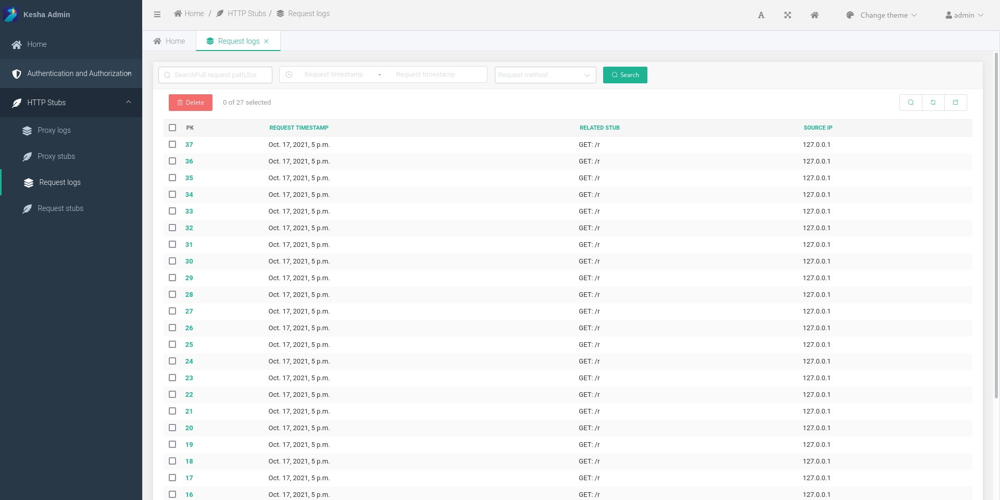

Kesha
Web-service for testing http requests and webhooks.
Project info:


Build:


Code quality:


Links:
- Repository: https://github.com/NUTtech/Kesha
- Documentation: https://nuttech.github.io/Kesha/
- Docker Hub: https://registry.hub.docker.com/r/nextuptechnologies/kesha
- Issue tracker: https://github.com/NUTtech/Kesha/issues
- Changelog: https://github.com/NUTtech/Kesha/blob/master/CHANGELOG.md
Components
- Database postgres.
- Database redis (for background celery-tasks).
- Python-app based on Django Web Framework.
Contributing
We welcome all contributions!
See CONTRIBUTING.md if you want to contribute.
You can start with issues that need some help
right now.
Screenshots

